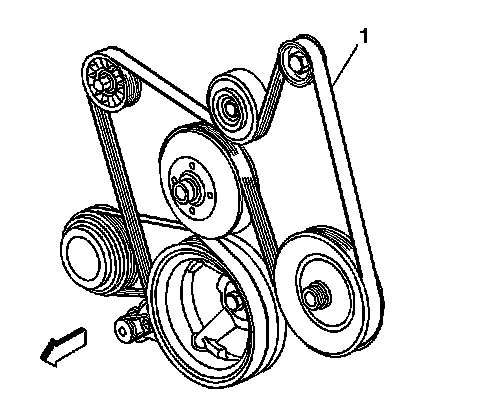

Drive Belt Replacement - Accessory
Drive Belt Replacement - Accessory
Removal Procedure

1. Open the hood.
2. Remove the air cleaner outlet duct.
3. Install a breaker bar with hex-head socket to the drive belt tensioner bolt.
4. Rotate the drive belt tensioner clockwise in order to relieve tension on the belt.
5. Remove the drive belt (1) from the pulleys and the drive belt tensioner.
6. Slowly release the tension on the drive belt tensioner.
7. Remove the breaker bar and socket and from the drive belt tensioner bolt.
8. Clean and inspect the belt surfaces of all the pulleys.
Installation Procedure
1. Route the drive belt (1) around all the pulleys except the idler pulley.
2. Install the breaker bar with hex-head socket to the belt tensioner bolt.
3. Rotate the belt tensioner clockwise in order to relieve the tension on the tensioner.
4. Install the drive belt under the idler pulley.
5. Slowly release the tension on the belt tensioner.
6. Remove the breaker bar and socket from the belt tensioner bolt.
7. Inspect the drive belt for proper installation and alignment.
8. Install the air cleaner outlet duct.
9. Start the vehicle and inspect the drive belt for proper operation.
10. Close the hood.